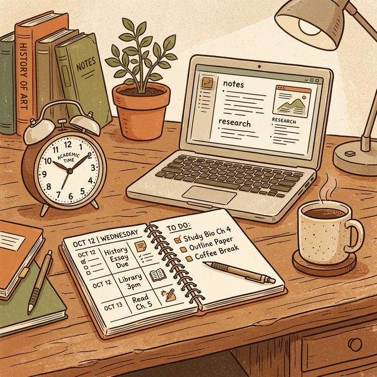

Simple Productivity Hacks for Students
By Ankit Verma | Published: March 12, 2025 | 📖 7 min read | 💬 18 Comments

📋 Table of Contents
As a student, you're constantly juggling classes, assignments, exams, extracurricular activities, and social life. With so many demands on your time, it's easy to feel overwhelmed and unproductive. But productivity isn't about doing more things — it's about doing the right things efficiently. In this article, we'll share simple yet powerful productivity hacks that any student can start using today.
1. The Pomodoro Technique
The Pomodoro Technique is one of the most popular and effective time management methods for students. Developed by Francesco Cirillo in the late 1980s, it involves working in focused 25-minute intervals (called "Pomodoros") followed by 5-minute breaks. After completing four Pomodoros, you take a longer break of 15-30 minutes.
This technique works because it breaks large tasks into manageable chunks and prevents mental fatigue. The time constraint also creates a sense of urgency that helps you stay focused. Many students report that they accomplish more in four Pomodoros (about 2 hours of focused work) than in an entire day of unfocused studying.
- Set a timer for 25 minutes and focus on a single task
- When the timer rings, take a 5-minute break
- After 4 Pomodoros, take a 15-30 minute break
- Use apps like Forest, Focus To-Do, or a simple kitchen timer
2. The Two-Minute Rule
The Two-Minute Rule, popularized by David Allen in his book "Getting Things Done," is simple: if a task takes less than two minutes to complete, do it immediately instead of adding it to your to-do list. This prevents small tasks from piling up and consuming your mental energy.
For students, this could mean immediately replying to a teacher's email, organizing your desk, filing a document, or making a quick note about something you need to remember. By handling these micro-tasks right away, you free up mental bandwidth for more important work like studying and assignments.
3. Time Blocking
Time blocking involves dividing your day into specific blocks of time, each dedicated to a particular task or activity. Unlike a traditional to-do list, which tells you what to do but not when to do it, time blocking assigns a specific time slot to each task. This eliminates decision fatigue and ensures that every important task gets done.
"What gets scheduled gets done. What doesn't gets procrastinated." — Anonymous
For example, you might block 6:00-7:00 AM for exercise, 7:30-9:30 AM for Mathematics, 10:00-12:00 PM for Science, 2:00-3:30 PM for English, and 4:00-5:00 PM for revision. The key is to be specific and realistic about how much time each task requires.
4. The Eisenhower Matrix
Named after President Dwight D. Eisenhower, this matrix helps you prioritize tasks based on their urgency and importance. It divides tasks into four quadrants:
- Urgent + Important: Do these immediately (e.g., exam tomorrow, assignment due today)
- Important but Not Urgent: Schedule these (e.g., long-term project, regular revision)
- Urgent but Not Important: Delegate or minimize (e.g., unimportant emails, social obligations)
- Neither Urgent nor Important: Eliminate (e.g., mindless scrolling, excessive gaming)
The most productive students spend most of their time in Quadrant 2 — working on important tasks before they become urgent. This proactive approach prevents last-minute stress and ensures steady progress.
5. Digital Detox Hours
Social media and smartphones are among the biggest productivity killers for students. Research shows that the average Gen Z student spends over 7 hours per day on their phone. Even brief interruptions from notifications can break your focus and reduce the quality of your work.
Designate specific hours each day as "digital detox" time — periods when you put your phone in another room, log out of social media, and focus entirely on studying. Start with just 2 hours per day and gradually increase. You'll be amazed at how much more you accomplish without constant digital interruptions.
6. Morning and Evening Routines
Having consistent morning and evening routines sets the tone for productive days. A good morning routine might include waking up at the same time every day, exercising for 20-30 minutes, eating a healthy breakfast, and reviewing your goals for the day. An evening routine might include reviewing what you accomplished, preparing materials for the next day, and winding down with light reading or meditation.
7. The Power of Saying No
Learning to say no is one of the most underrated productivity skills. As a student, you'll face countless demands on your time — social events, group chats, requests for help, and more. While it's important to be social and helpful, you also need to protect your study time and personal boundaries.
"People think focus means saying yes to the thing you've got to focus on. But that's not what it means at all. It means saying no to the hundred other good ideas." — Steve Jobs
🚀 Quick Action Steps
- Try the Pomodoro Technique for one week
- Use the Eisenhower Matrix to prioritize daily tasks
- Set 2 hours of digital detox per day
- Create a consistent morning routine